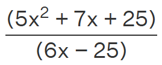
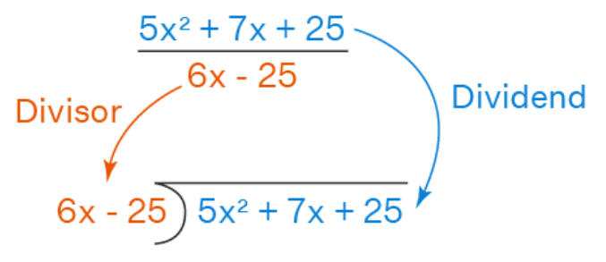

CONCEPTO DE LA DIVISIÓN DE POLINOMIOS
Dividir polinomios es una operación aritmética en la que dividimos un polinomio por otro polinomio, generalmente con un grado menor en comparación con el dividendo. La división de dos polinomios puede dar como resultado o no un polinomio.
¿Qué es la división de polinomios?
Polinomios son expresiones algebraicas que constan de variables y coeficientes. Está escrito en el siguiente formato: 5x^2 + 6x-17. Este polinomio tiene tres términos que están dispuestos según su grado. El término con mayor grado se coloca primero, seguido de los inferiores. Dividir polinomios es un algoritmo para resolver un número racional que representa un polinomio dividido por un monomio u otro polinomio. El divisor y el dividendo se coloca exactamente de la misma manera que lo hacemos para la división regular. Por ejemplo, si necesitamos dividir 5x^2 + 7x + 25 por 6x - 25, lo escribimos de esta manera:

PARA VER UN VIDEO DE REFERENCIA HAZ CLINC EN EL SIGUIENTE ENLACE:
El polinomio escrito encima de la barra es el numerador ( 5x2 + 7x + 25), mientras que el polinomio escrito debajo de la barra es el denominador (6x - 25). Esto se puede entender mediante la siguiente figura que muestra que el numerador se convierte en dividendo y el denominador se convierte en divisor
